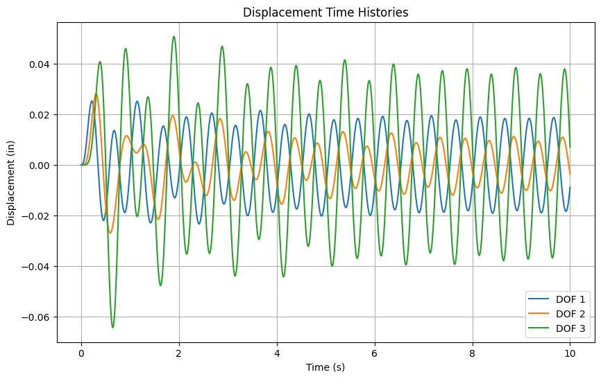

By Hossein Karagah
© Copyright 2025 GNU GENERAL PUBLIC LICENSE.
Time-Domain Response to External Forces#
This notebook evaluates the time history response of the 3-DOF structural system subjected to general external forces using numerical integration.
import numpy as np
import matplotlib.pyplot as plt
from scipy.integrate import solve_ivp
Define System Matrices#
m1, m2, m3 = 2.0, 1.5, 1.0
k1, k2, k3 = 400.0, 300.0, 200.0
c1, c2, c3 = 5.0, 4.0, 3.0
M = np.diag([m1, m2, m3])
K = np.array([[k1 + k2, -k2, 0],
[-k2, k2 + k3, -k3],
[0, -k3, k3]])
C = np.array([[c1 + c2, -c2, 0],
[-c2, c2 + c3, -c3],
[0, -c3, c3]])
Minv = np.linalg.inv(M)
Define External Force Function and ODE System#
def external_force(t):
return np.array([10 * np.sin(2 * np.pi * 2 * t), 0, 0])
def system(t, y):
u = y[:3]
v = y[3:]
f = external_force(t)
a = Minv @ (f - C @ v - K @ u)
return np.concatenate((v, a))
Initial Conditions and Time Integration#
y0 = np.zeros(6) # Initial displacement and velocity
sol = solve_ivp(system, [0, 10], y0, t_eval=np.linspace(0, 10, 1000))
t = sol.t
u = sol.y[:3, :]
plt.figure(figsize=(10, 6))
for i in range(3):
plt.plot(t, u[i], label=f'DOF {i+1}')
plt.title("Displacement Time Histories")
plt.xlabel("Time (s)")
plt.ylabel("Displacement (in)")
plt.grid(True)
plt.legend()
plt.show()
